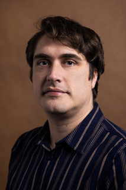

Willem Flinterman
historicus en bio-entrepreneur.
Wat deze uiteenlopende beroepsomschrijvingen aan elkaar verbindt: ik ben een nerd. Ik houd van kennis en van onderzoeken. Mijn belangstelling is breed, maar bijzonder interessant vind ik geschiedenis en biologie.
Na het gymnasium in Den Haag, waar ik het profiel natuur & gezondheid volgde, besloot ik geschiedenis en Arabisch te gaan studeren. In 2017 behaalde ik aan de UvA een PhD in geschiedenis, met een proefschrift over het Mamlukse Sultanaat (1250-1517), een door ex-slaven geregeerde staat in het Midden-Oosten. Het onderzoek was deel van een breder project over staatsvormingsprocessen in de multi-etnische wereldrijken van vroegmodern Europa en Azië.
Tijdens het schrijven van mijn proefschrift, pakte steeds meer donkere wolken zich samen boven de hoofden van mijn generatie. En ik merkte dat ik het steeds moeilijker begon te vinden om wetenschap te bedrijven enkel omwille van de wetenschap. Ik woonde inmiddels in Berlijn en raakte betrokken bij de burgerbeweging Pulse of Europe. Uiteindelijk nam ik een baan aan als manager van het project “HausParlamente“, een Europees burgerparticipatie-initiatief.
En toen sloeg de serendipiteit toe. Tijdens een workshop die ik had georganiseerd, ontmoette ik een experimenteel ontwerpster, die me vertelde over een project van haar dat Syroworm heette, waarbij het ging om meelwormen die piepschuim aten en verteerden. Een sluimerende bio-entrepeneur werd in mij wakker.
Nadat het project bij Pulse of Europe was afgerond, besloot ik dat het tijd was voor een radicale verandering. In de zomer van 2020 verhuisde ik terug naar Nederland om als “bionier“ bij BlueCity in Rotterdam aan de slag te gaan. Ik wil onderzoeken in hoeverre we meelwormen en andere organismen kunnen inzetten bij het circulair omzetten van afval in organische voedingstoffen. En valt hieruit een goede businesscase te ontwikkelen? Het haalbaarheidsonderzoek is in november 2020 van start gegaan en zal nog ongeveer een jaar duren. Waar ik zelf de kennis onbeer, wordt ik bijgestaan door experts binnen en buiten BlueCity.
Naast dit onderzoek, ben ik zo nu en dan ook nog als historicus werkzaam. Op freelance basis geef ik advies, schrijf en redigeer teksten, en help ik studenten bij het schrijven van hun scriptie.